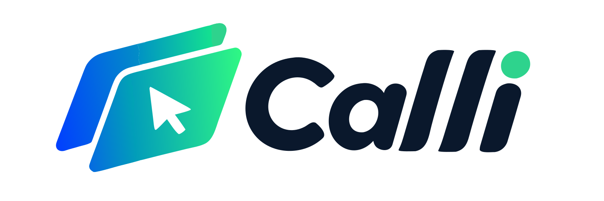
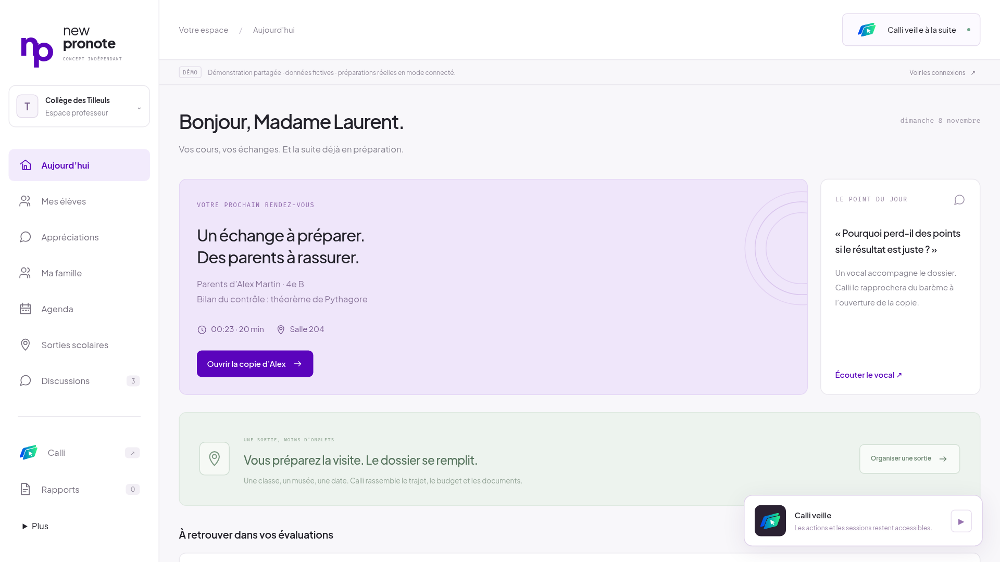
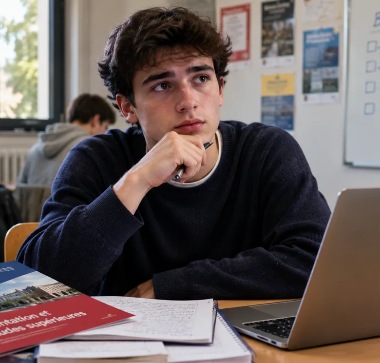
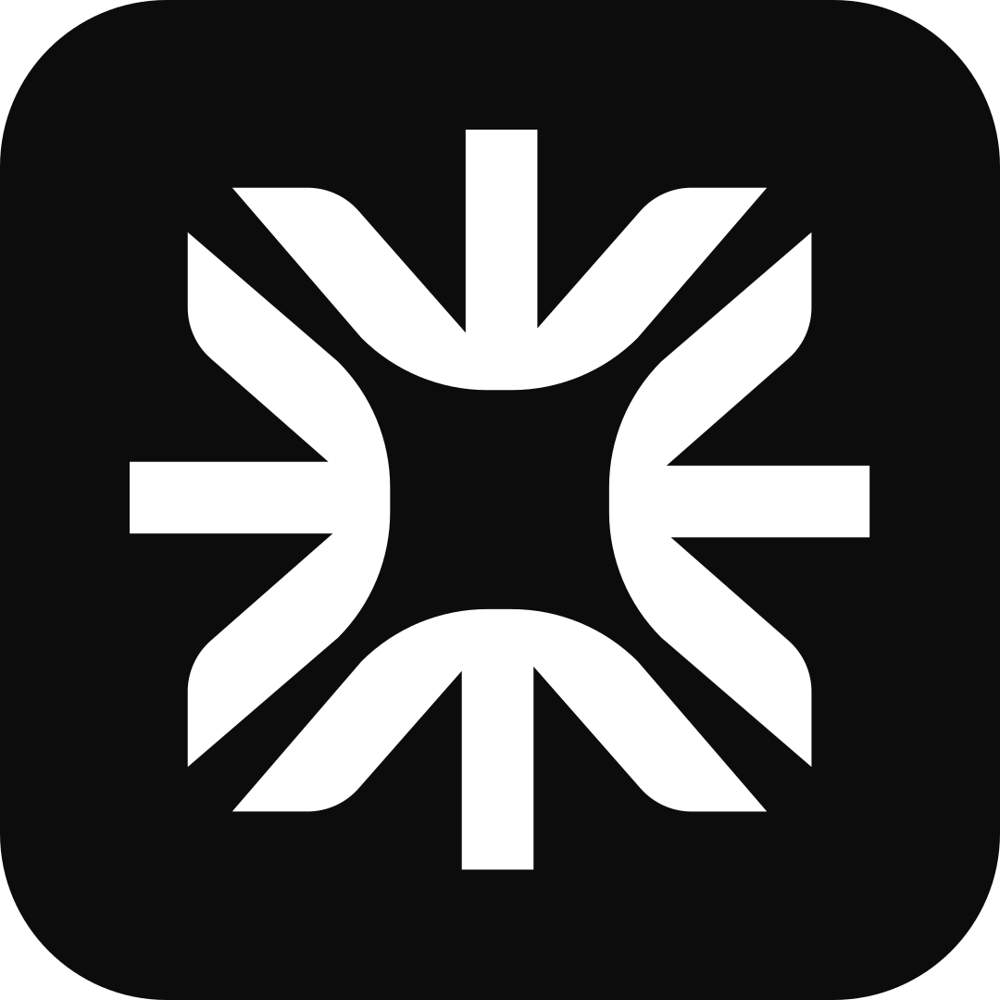
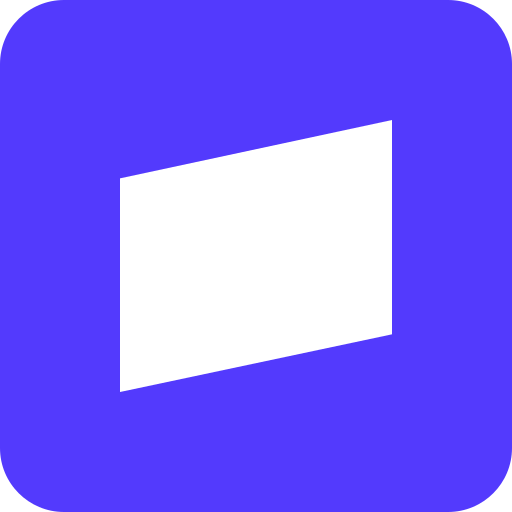
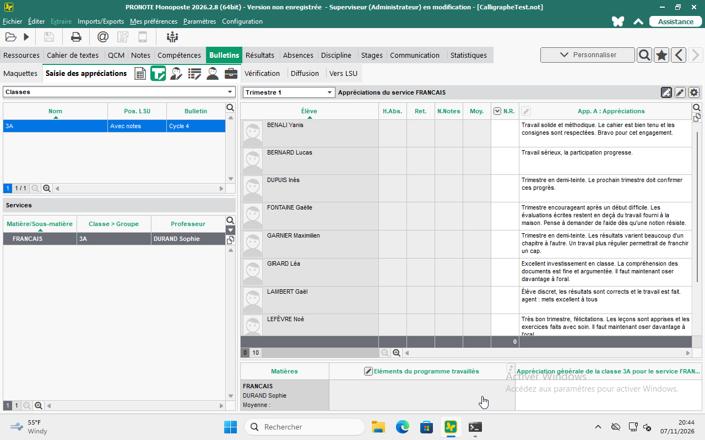

Dictez une fois. Retrouvez-le dans PRONOTE.
Une dictée terminée rejoint automatiquement la file d’écriture. Calli utilise l’interface du logiciel, relit l’appréciation et enregistre le résultat.

ENUne aide aux enseignants qui passe à l’action
Dictez une appréciation. Ouvrez une copie. Calli vous aide à préparer la suite, dans les outils que vous utilisez déjà.
Prototype de hackathon · élèves fictifs · aperçu local

Le vrai logiciel Windows, une vraie transcription vocale et un résultat que l’on peut vérifier.
Un espace simple pour les enseignants, avec des vues utiles aux élèves et aux parents.
Une dictée terminée rejoint automatiquement la file d’écriture. Calli utilise l’interface du logiciel, relit l’appréciation et enregistre le résultat.
Les documents du professeur alimentent un exercice interactif créé via l’API Devin. L’élève reçoit un retour à chaque étape ; le professeur peut prévisualiser l’activité.
Une synthèse par enfant fictif, des échéances communes et des pistes utiles. Chaque élément permet de retrouver sa source. La vue est en lecture seule.
Profils illustratifs
Calli est un assistant contextuel. L’éducation est sa première application : ces six points de vue en orientent la conception.
Enseignant · Professeur principal
“Je veux enseigner, pas passer mes soirées à rassembler des informations.”
Préparer les appréciations et les rendez-vous parents à partir de dossiers dispersés.
Ouvrez un dossier élève. Calli prépare une synthèse reliée aux sources pendant que vous continuez à travailler.
Enseignante · Organisatrice de sorties
“La technologie doit m’éviter des étapes, pas en ajouter.”
Organiser une sortie scolaire tout en poursuivant son travail de classe.
Les recherches indépendantes avancent en parallèle et leurs résultats se retrouvent dans un même dossier de sortie.
Parent · Secondaire
“Je vois les notes. Aidez-moi à comprendre ce qui compte.”
Après son service au restaurant, comprendre les retours sur son enfant et préparer ses questions à l’enseignant.
Une vue familiale rassemble les points clés et les échéances, avec un retour vers leurs sources.
Parent · Deux enfants
“Deux enfants, deux fils d’informations. Aidez-moi à voir ce qui demande mon attention.”
Suivre un enfant au primaire et l’autre au collège, avec des messages répartis entre plusieurs espaces.
La vue familiale réunit les points clés de chaque enfant et les échéances communes au même endroit.
Piste de conceptionÉlève · Collège
“J’aimerais qu’on m’écoute avant de me juger.”
Avoir besoin d’un échange constructif avec un adulte de confiance.
Une piste de conception : aider un enseignant à préparer un échange à partir des informations qu’il choisit de fournir.
Piste de conception
Élève · Lycée
“Aidez-moi à comprendre quoi travailler ensuite.”
Transformer les retours d’un enseignant en une prochaine étape concrète.
Un enseignant peut préparer un exercice interactif ciblé à partir des besoins de l’élève.
Six profils fictifs pour explorer les besoins et guider la conception.
Un espace de travail clair. Des outils spécialisés pour chaque étape utile.
Computer use et outils personnalisés

Transcription vocale
Recherche sourcée
Génération d’exercices

Checkout · à configurer
New Pronote est l’espace de travail. Calli pilote le PRONOTE existant derrière cette interface. La session enregistrée combine le computer use de H et des appels d’outils pour prendre l’élément suivant et signaler le résultat relu.
25,6 secondesDe l’entrée en file au résultat vérifié, pour une appréciation fictive. Une session réussie enregistrée, pas une mesure du temps gagné par un humain.

Calli dans votre travail quotidien.
Non. Une dictée terminée rejoint automatiquement la file après les contrôles d’identité et de contexte. L’agent écrit puis relit le résultat. STOP empêche les nouvelles écritures ; une action déjà engagée peut se terminer.
Non. Ce prototype réagit aux documents ouverts dans Calli. L’observation générale du bureau et plusieurs agents indépendants travaillant simultanément restent des pistes à développer.
Les durées d’exécution native sont mesurées. Le gain humain reste estimé. Pour dix commentaires déjà rédigés, un scénario frappe contre dictée, incluant une marge pour les interventions, donne environ 43 % de temps de saisie active en moins. Nous n’avons pas encore chronométré de référence humaine.
C’est un prototype de hackathon avec des élèves fictifs. La vue parent est une démonstration locale, sans gestion des comptes et des droits de production. Aucune certification réglementaire ni promesse d’hébergement en France n’est revendiquée.
Découvrez l’espace de travail et les actions que Calli peut prendre en charge.